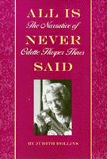

<body bgcolor="#FFFFFF" text="#000000" link="#0000FF" vlink="#CC0000" alink="#CC0000"><center><hr width="350" size="1" align="center" noshade>The spirited oral history of a remarkable African American woman<hr width="350" size="1" align="center" noshade><p><a href="https://cdcshoppingcart.uchicago.edu/Cart/ChicagoBook.aspx?ISBN=9781566393072&&PRESS=temple" target="_top">Buy this book!</a> | <a href="https://cdcshoppingcart.uchicago.edu/Cart/Cart.aspx?PRESS=temple" target="_top">View Cart</a> | <a href="https://cdcshoppingcart.uchicago.edu/Cart/Cart.aspx?PRESS=temple" target="_top">Check Out</a></p><p></p></center><!--none//--><h1>All is Never Said</h1>
<H2>The Story of Odette Harper Hines</H2>
<h3>Judith Rollins</h3>
<P>cloth 1-56639-307-8 $61.50, May 95, <FONT COLOR=#990033>Out of Print</FONT>
<br>paper 1-56639-308-6 $27.95, May 95, <FONT COLOR=#990033>Out of Print</FONT>
<BR> 288 pp
6x9
1&nbsp;figure 27&nbsp;halftones
</P><BLOCKQUOTE><I>"This oral history of civil-rights activist Odette Harper Hines is not the usual account of sit-ins, marches, and triumphs and tragedies&#151it offers a more intimate look in which Hines reveals many sides of her life as a daughter, sister, wife, mother and worker as well as activist.... Rollins relates Hines's story in a powerful yet entertaining style. By the end, readers will feel that not only have the met Hines&#151they know her."</I>
<br>&#151<b><I>Publishers Weekly</I></b><I></I></BLOCKQUOTE>
<p>With intelligence, insight, and humor, Odette Harper Hines describes her life&#151a life that reversed the pattern of the Great Migration by beginning in prosperity in the urban North and moving into the small-town South. Recorded by Judith Rollins over eight years, this intimate narrative is an unusual collaboration between two African American women who represent two generations of civil rights activists.
<p>Born in New York into a comfortable family, Hines' activism began I the Abyssinian Baptist Church in her teens and continued throughout her life as she witnessed the Great Depression in Harlem, worked on the WPA Writers Project, became publicity director of the NAACP, and volunteered for the Red Cross in Europe during WWII. When she moved to Louisiana in 1946, she continued to challenge racial injustice and risked her life to house civil rights workers in the early 1960s (Rollins, among them). She later started and directed the Headstart Program in her parish.
<p>Throughout this narrative, Hines describes her relationships with such figures as Mary McLeod Bethune, Adam Clayton Powell, Walter White, Thurgood Marshall, Ella Baker, Marcus Garvey, Claude McKay, Ralph Ellison, and many others. Yet Hines' memoir is not only about her public life. She courageously reveals her personal life and private pain. Twenty-eight photographs&#151 mostly from Hines' family album&#151accuentuate this oral history that is, as Rollins states in her Introduction, "a complex and textured portrait of an extraordinary twentieth century American woman."
<BR>&nbsp;<h2>Excerpt</h2><P>Excerpt available at <a href="http://www.temple.edu/tempress">www.temple.edu/tempress</a></p>
<BR>&nbsp;<h2>Reviews</h2>
<p><I>"[Hines's] story is fascinating because of her participation in so many historical events. It is most compelling, however, for the perspective it offers on racism and activism. All may never be said, but this book advances our understanding of race and gender remarkably."</I>
<br>&#151<b><i>Library Journal</b></i>
<p><I>"Judith Rollins has given us all a searingly beautiful and important book. The indomitable NAACP publicity directory, adventurous World War II Red Cross volunteer, courageous Civil Rights activist, and Mother, Odette Harper Hines tells a powerful tale of Black life behind and in front of the veil. I have yet to read a more honest, passionate, and profoundly uplifting narrative."</I>
<br>&#151<b>Darlene Clark Hine</b>, Michigan State University
<p><I>"The world is lucky always to find one more life-story of human grace, courage, and wonder than it has any right to expect&#151like this one, coming from unsuspected, almost hidden quarters. All is indeed never said. But if you were to try to make a mosaic of America in the twentieth century by putting together a score or so of such life-stories, this awe-inspiring tale must need be one of them."</I>
<br>&#151<b>Clyde Taylor</b>, Tufts University
<p><i>"Rollins's biography provides some rich sociological materials that can be used as a supplement for courses in social stratification, race and ethnic relations, and women's studies."</i>
<br>&#151<b><i>Gender and Society</i></b>
<BR>&nbsp;<h2>Contents</h2><P>
<p>Preface
<br>Acknowledgments
<br>Family Trees
<br>1. Home: "<I>Jada, Jada, Jada Jada Jing Jing Jing</I>"
<br>2. Family: "<I>They were so diverse...</I>"
<br>3. "Young Thinkers" and Others: "<I>I was encouraged...to be very much out in the world.</I>"
<br>4. The Writers Project: "<I>...right where I wanted to be.</I>"
<br>5. The NAACP: "<I>Everybody in there had a sense of mission.</I>"
<br>6. World War II: "<I>[They] wanted to make like the Red Cross was integrated.</I>"
<br>7. Going South: "<I>In the front of the train and the back of the bus.</I>"
<br>8. The Trial: "<I>...there's something dreamlike about that period.</I>"
<br>9. The Fifties: "<I>What color is cotton? Pick it yourself!</I>"
<br>10. The Civil Rights Movement: "<I>It was a real community effort.</I>"
<br>11. Headstart: "<I>I simply could not have </I>not<I> done it.</I>"
<br>12. Taking Care: "<I>If you're alive, live.</I>"
<br>Notes
<br>Index
</P><BR>&nbsp;<H2>About the Author(s)</H2>
<table><tr><td valign="top"><img src="/tempress/authors/1196_au.gif" height="90" width="75"></td><td width="100%" valign="middle"><p><b>Judith Rollins</b> is Associate Professor of Africana Studies and Sociology at Wellesley College, and the author of <I><a href="349_reg.html" target="_top">Between Women: Domestics and Their Employers</a></I> (Temple).</P></td></tr></table>
<BR><H2>Subject Categories</H2>
<p><A HREF="/tempress/african.html" TARGET="_top">African American Studies</a>
<BR><A HREF="/tempress/women.html" TARGET="_top">Women's Studies</a>
<BR><A HREF="/tempress/biography.html" TARGET="_top">Biography/Memoir/Autobiography</a>
</p>
<p align="center"><a href="https://cdcshoppingcart.uchicago.edu/Cart/ChicagoBook.aspx?ISBN=9781566393072&&PRESS=temple" target="_top">Buy this book!</a> | <a href="https://cdcshoppingcart.uchicago.edu/Cart/Cart.aspx?PRESS=temple" target="_top">View Cart</a> | <a href="https://cdcshoppingcart.uchicago.edu/Cart/Cart.aspx?PRESS=temple" target="_top">Check Out</a></p><p><font face="Arial" size="1"><a href="copyright.html" onMouseOver="window.status='Web Copyright Policy';return true;" onMouseOut="window.status=''" title="Web Copyright Policy">&copy;</a> 2015 <a href="http://www.temple.edu" target="new" onMouseOver="window.status='Link to Temple University home page';return true;" onMouseOut="window.status=''" title="Link to Temple University home page">Temple University</a>. All Rights Reserved. http://www.temple.edu/tempress/titles/1196_reg.html</font></p>